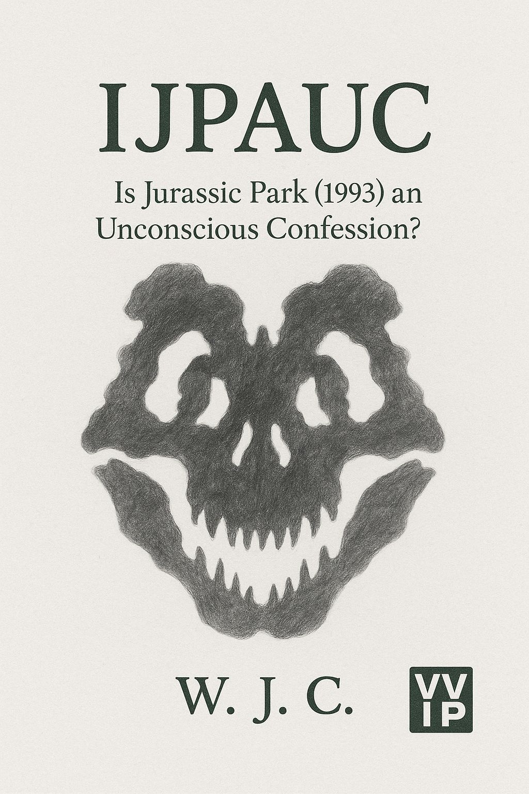

Is Jurassic Park (1993) an Unconscious Confession?
A long-form investigative essay project exploring the legal, moral, and cinematic implications of the Twilight Zone tragedy — with Spielberg, Kennedy, and Marshall at the center. Research, dossiers, and a forthcoming book.